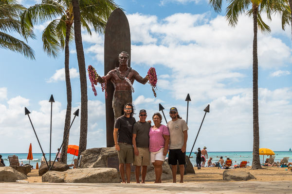
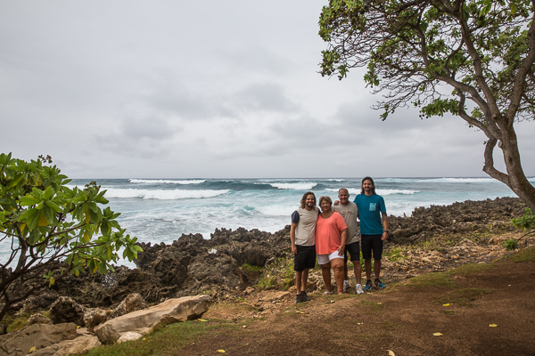

We meet a lot of people on the road. They tend to ask a lot of questions.
A popular inquiry amongst the older folks we meet is, “What do your parents think of this?”
The truth is they played a key role in inspiring The Bro’d Trip. Dad did a bit of work-related traveling when we were young and turned it into a family event. Justin and I had been to several different countries before we could remember any of them. I guess we caught the “travel bug” before we were old enough to realize.
When we told Mom and Dad our plans for our road trip, they didn’t take it very seriously. Justin had planned on about 7 other career paths between high school and college graduation before settling into a cozy banking job. I’m pretty sure they thought I was determined to be a professional potato of the couch discipline. At the time I wouldn’t have blamed them.
They paid for both of us to get our AA degrees from a local community college and finish our BA’s at UCF, the second largest university in the US. Neither of us really wanted to go to college but they were determined to give us the opportunity to earn a college education — a luxury neither of them had. Instead of graduation presents, they always told us that once we both graduated college we’d go on a family vacation to Hawaii.
It only took me 5 and 1/2 years to get a degree that takes most people 4 years, but it just so happened to be perfect timing. Toward the end of 2015, when all our saving and planning for our road trip started to fall into place, Mom and Dad left their backseat roles as encouragers of a hypothetical idea as they realized that The Bro’d Trip was really going to happen. Dad gave us tons of marketing ideas and Mom made sure we’d thought of any and every problem we might face along the way. And, as a family, we’d realized that the promise they’d made to us as Justin started college was how Justin and I could cross Hawaii off the list for our 50-state journey.
Since this Hawaii trip has been talked about for years, Mom and Dad have been planning and saving for it for quite a while. They’d racked up enough American Express reward points to cover all 4 of our round-trip flights, and in first class. If you’ve ever flown first class, you know how amazing it is. It’s fancy. The flight attendants served me a quiche for breakfast. I didn’t even know how to spell ‘quiche.’ I had to Google it which is very difficult to do when you don’t know how to spell it.

Justin and I had ambitious goals for our time in Hawaii. I wanted to surf every day. Justin wanted to do a couple strenuous hikes. But the island lifestyle had different plans for us. When we wanted to plan non-stop days of activities, the whispering palms of Oahu told us to chill the hell out. So we did.
Mom insisted we go to the Honolulu Zoo and nobody argued. It was amazing. I saw a tiger with jaws the size of my head and monkeys with arms like ropes. Me and Mom made jokes about funny looking birds and laughed at how “hangry” Dad and Justin got when we’d spent too long trying to talk to all the animals.
I could always count on Dad to surf with me. When the waves were small in Waikiki we rented longboards and fought through crowds of tourists in the lineup. We’d share waves and see who could ride further. And when a tourist (or a snobby local) would steal our wave, we’d just laugh. When we surfed bigger waves on the North Shore, we struggled to figure out the reef breaks together. One time he didn’t even catch one but assured me that he still had fun. “I was just happy I could paddle out!” he said.
One of my favorite parts of the trip was a family meeting we had while staying on the North Shore. When we were growing up, we occasionally had family meetings that started with Mom or Dad proclaiming they’d been “bad parents.” We dreaded hearing that because it was their sneaky way of saying that they were about to make our lives more difficult.
(For example: “We’ve been bad parents. You get too much of an allowance for the amount of chores you do around the house. Do you want more responsibilities or less allowance?”)
But this family meeting didn’t have anything to do with bad parents or decreasing allowances. (We haven’t had allowances for years, don’t worry.) This talk was about how proud of us they were and that they would always be there for us, even if we don’t see eye to eye on things. They assured us that no matter what kind of lifestyle we decide to lead, they will try to understand, respect, and encourage us to reach our unique goals.

Since leaving paradise and returning to “real life,” not too much has changed. We still talk on the phone with our parents a couple times per week. Dad emails us marketing ideas and Mom sends us pictures of our dog. They both continue to share all our photos and blog posts on their personal Facebook walls.
Although we’re back to normalcy, we now have family memories that couldn’t have been made without the amazing and supportive parents we have. I’ll always remember Mom throwing coconuts to help me get a cool picture of Justin and talking about life with Dad over glasses of honey bourbon. I hope one day I can make memories just as sweet with a future Fricke generation.